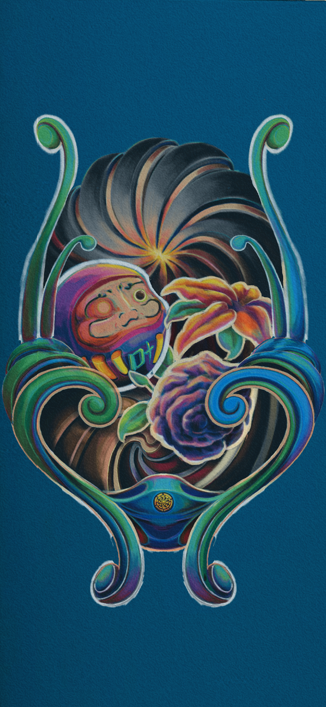

No ventre, 叶: o desejo que se cumpre agora;

debaixo, o mar faz de cada gesto uma espiral,
e nada é à toa, mesmo sem saber a hora.
Há desenho no que ninguém decifrou, e é sinal;
o futuro, que não controlo, atravesso, leve,
e o mar segue inteiro, sereno e natural.

Em volta, duas notas num arabesco breve:
duas cores, uma forma, e o compasso — meu — se expressa;
juntas, o que bate no peito, em curva, se escreve.

Na base, ouro em círculos dentro de círculos; o fio começa,
dá voltas, segue até a luz, só o próximo metro alcança;
o metro basta, e o resto vem sem pressa.

Do lado de fora, onde o dia chega primeiro, a flor avança:
setembro: primavera — e tudo abre para o dia,
e a estação é minha, e é só esperança.

A luz não some: fica pequena, e é ela que me guia;
num lado, noite e um ponto aceso; no outro, o céu aberto;
os dois juntos, e a mesma luz, acesa por si, em harmonia.

Por inteiro, o braço é um círculo, e o que desce sobe, por certo;
sem começo, sem ponta, a curva que se fecha em si:
nada falta, nada sobra, e tudo soa em concerto.
E, de volta ao começo, estou aqui.

O que desce não se perde: volta ao chão,
pois o peso sabe o caminho de voltar;
o corpo que cai é o mesmo em ascensão.